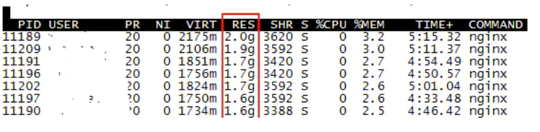
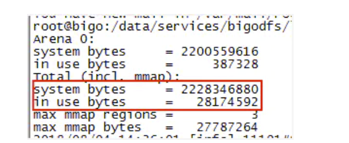
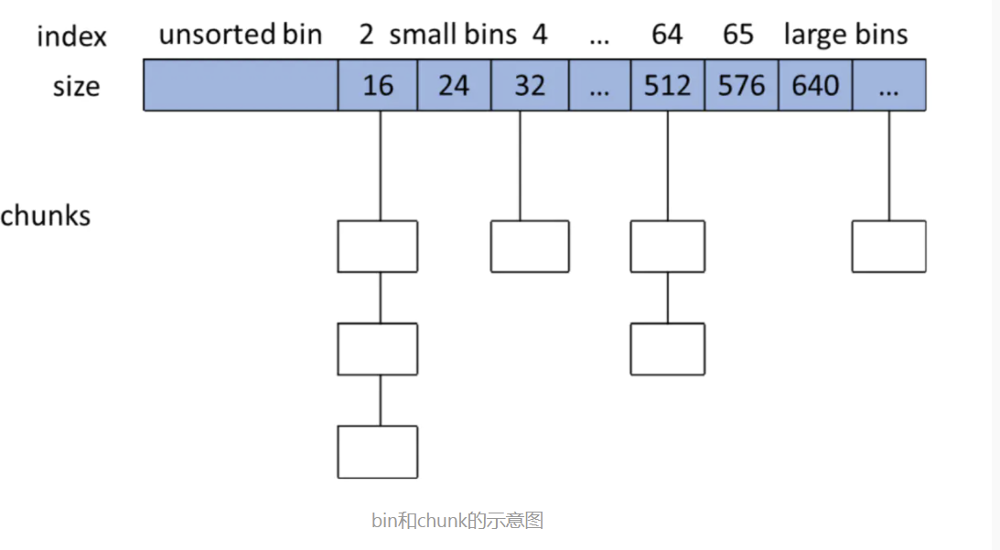

glibc内存管理——Linux内存管理小结二
【引言】
最近在生产环境遇到一个奇怪的现象，nginx占用的虚拟内存和物理内存都很高，并且一直不会下降。

因为服务器本身的业务量并不大，而且对比集群其他服务器nginx才几十兆的内存消耗，第一个想到的就是内存泄漏。但是连续观察了多天，内存也没有进一步上涨，和以前遇过的内存泄漏问题不是很像。
偶然发现了一个特别有用的函数malloc_stats()，可以打印出进程malloc分配的虚拟内存信息。故gdb attach到其中一个worker进程，调用call malloc_stats()函数，将worker进程的内存分配信息打印出来，默认会输出到nginx的error.log中。 如下所示：

从图中可以看到，虽然进程malloc了2G左右的内存，但是实际in use的只有28m，这说明其他绝大部分的内存都已经free了，出现了内存空洞，而不是内存泄漏。那到底内存空洞和内存泄漏有什么区别呢？
【glibc内存管理】
Linux通过brk、mmap/munmap系统调用来操作内存。但是频繁的系统调用对于系统性能是很大的损耗。为了解决这个问题，glibc对系统调用进行了一层封装，相当于一个代理，它实现了一个内存池的功能，提供malloc/free函数给用户调用，也就是ptmalloc。类似有google实现的tcmalloc等。这样用户通过malloc/free函数来操作内存池，减少频繁系统调用带来的性能损耗。当内存池中的空闲内存可以满足用户申请时，优先返回内存池中的内存地址；否则glibc才会通过brk/mmap等系统调用去向系统申请。
【ptmalloc内存管理三个概念：arena、bin、chunk】
1. Arena：ptmalloc对进程内存是通过一个个Arena来进行管理的。
在ptmalloc机制下，每个进程都有一个内存主分配区Main_arena和若干个非主分配区Non_Main_arena，主分配区只有一个，非主分配区可以动态增加。主分配区和非主分配区采用环形链表进行管理，每一个分配区采用互斥锁mutex实现多线程访问互斥。在多线程的场景下，如果线程申请内存时当前的分配区都已经被加锁，那么ptmalloc将会生成一个新的非主分配区。
当一个线程调用malloc申请内存时，该线程先查看线程私有变量中是否已经存在一个分配区。如果存在，则对该分配区加锁，加锁成功的话就用该分配区进行内存分配；失败的话则搜索环形链表找一个未加锁的分配区。如果所有分配区都已经加锁，那么malloc会开辟一个新的分配区加入环形链表并加锁，用它来分配内存。释放操作同样需要获得锁才能进行。
这种机制在多线程竞争锁激烈的场景下会带来一个问题：非主分配区开辟越来越多，因为它一旦开辟了就不会释放，一个分配区就是64MB。这样也会导致进程占用的内存越来越多（可能实际使用的并不多）。如果系统配置的ulimit进程最大虚拟内存值不是unlimited，那么当进程占用的内存达到ulimit值，就会core掉。这个情况也可以在pmap -p pid中看到里面有大量的64MB大小的anon内存块。这个问题可以通过设置MALLOC_ARENA_MAX环境变量来限制Arena的最大数量规避。
主分配区可以使用brk和mmap向操作系统申请虚拟内存；但是非主分配区只能通过mmap申请，并且mmap每次申请的单位为64MB（64位系统下），再从中切割出用户所需大小的内存。
主分配区使用brk调用可以访问进程的heap堆区。堆区的内存申请是通过brk调用将堆顶指针往高地址移动实现的，这样brk申请的内存肯定是连续的；释放的时候将堆顶指针往低地址移动（并不保证将free的内存归还给操作系统，需要堆顶出现一块连续的超过阈值大小的空闲内存时才会归还给操作系统）。如果主分配区使用mmap申请内存，那么free时会调用munmap直接将内存归还给操作系统。那么主分配区什么时候使用brk什么时候使用mmap呢？
系统内核有一个阈值DEFAULT_MMAP_THRESHOLD，一般默认为128KB。当malloc申请的内存小于该阈值，glibc会采用brk去向系统申请内存；而申请的内存大于该阈值时，glibc会采用mmap去向系统申请。
但是这样会带来一个问题：我们在程序中释放一个对象是无法保证它的内存是否连续释放的。可能出现先申请的内存，即堆底的内存先释放的情况，因为堆顶的内存还在使用，这时候是不能将堆顶指针往下移的，这时候虽然前面的那块内存已经free来，但是ptmalloc仍然不会将其还给操作系统，而是把它缓存到自己的池子里。这时候内存看上去仍然会被计算在进程的内存使用中，导致进程的内存使用量一直降不下去（如果堆顶的指针一直不释放的话），这即是内存空洞（内存碎片）。理论上这些内存空洞都是可以复用的，如果后面用户又申请同样大小的内存，ptmalloc会将这些空洞内存分配给它。所以在大量申请释放小块内存的场景下，进程容易出现内存空洞的问题。即随着某个时候业务量的激增，进程使用的虚拟内存涨上去了就降不下来了，看着就像是出现了内存泄漏。
但是相比内存泄漏，内存空洞的问题情况相对要好一些，因为内存可以复用，如果后面的业务量不再继续上涨，理论上进程内存使用量是不会继续增多的。
2. Chunk：ptmalloc使用chunk数据结构来表示一块具体申请或者释放的内存。
也就是说chunk是glibc内存管理的“最小单位”。
3. Bin：用于管理chunk的数据结构
用户free掉的内存并不是都会马上归还给系统，ptmalloc会统一管理heap和mmap映射区域中的空闲的chunk，当用户进行下一次分配请求时，ptmalloc会首先试图在空闲的chunk中挑选一块给用户，这样就避免了频繁的系统调用，降低了内存分配的开销。ptmalloc将相似大小的chunk用双向链表链接起来，这样的一个链表被称为一个bin。
关于chunk的数据结构细节不进行过多描述，详情可以参考华庭大神的文章：《glibc内存管理》
https://paper.seebug.org/papers/Archive/refs/heap/glibc内存管理ptmalloc源代码分析.pdf

bin和chunk的示意图
【内存空洞和内存泄漏】
简单来说，内存空洞是指进程已经free了内存，但是由于glibc的原因，这部分内存并没有还给操作系统，而是缓存在glibc为进程维护的内存池中。所以在top等工具中看起来这部分内存仍然是进程在使用。而这些内存空洞是可以被进程自身复用的，后续如果有同样大小的malloc请求，glibc会使用这部分空洞的内存进行分配。
而内存泄漏，是进程调用了malloc申请内存，但是没有调用free释放。这样导致进程的内存空间一直上涨，后续的malloc请求无法复用前面申请的内存，直到达到ulimit的限制或者触发OOM。
注意这里说的内存空间申请、释放和上涨都是针对虚拟内存空间来说。只有当申请的虚拟内存空间得到访问，比如对malloc的空间进行初始化，这时候才会将虚拟内存空间映射到物理内存空间。如果物理内存空间出现不足，而后续又有虚拟内存要映射过来，就会出现swap交换，将物理内存中暂时没有用到的数据置换到硬盘上配置的swap空间中。如果连swap空间也不足了，就会触发OOM，甚至系统hang死。